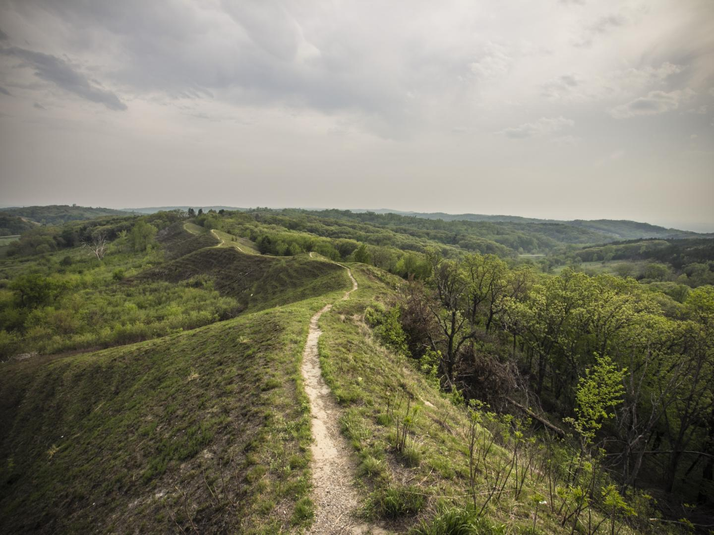
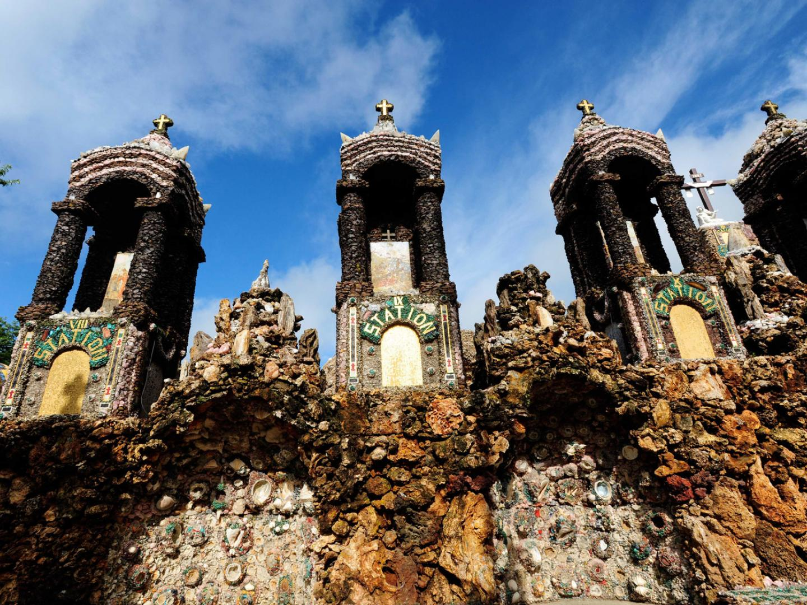

꼭 가봐야 할 곳
-
꿈의 구장
“그것을 만들면 그가 올 것이다”라는 ‘꿈의 구장’의 명대사는 꿈을 추구하는 전 세계
의 사람들에게 오늘날까지도 전해지고 있습니다. 다이어스빌에 있는 영화 꿈의 구장
촬영지에서는 이 영화에 등장하는 농가(가이드 동반 투어 진행), 야구 경기장과 옥수
수밭을 둘러볼 수 있습니다. 9월에 이곳을 방문할 수 있다면 웨이드 보그스, 레지 잭
슨, 로드 커류 등 전설적인 야구 선수들이 출연하며 하루 종일 열리는 축하 행사인 드
림 팀 티켓을 예약해 보세요.
더 보기
사우스 파드레 아일랜드
-
매디슨 카운티의 다리
매디슨 카운티는 실제로 베스트셀러 소설과 인기 영화의 목가적인 배경이 된 완벽한
지붕 다리가 많은 것으로 유명합니다. 윈터셋에 있는 방문자 센터에 자유 여행을 위한
지도가 마련되어 있습니다. 몇 시간 동안 예스러운 다리에서 사진을 촬영해보고, 마을
의 상점과 레스토랑에서 즐거운 시간을 보내보세요.
더 보기
매디슨 카운티의 즐길 거리
-
아이오와주 박람회
평범한 박람회가 아닙니다. 11일 동안 독특한 음식, 기상천외한 경합, 다양한 가판대,
농업 박람회와 모든 연령을 위한 스릴 넘치는 놀이기구를 즐길 수 있는 아이오와주
박람회는 미국 최고의 박람회 중 하나입니다. 콘서트 출연진도 기대 이상입니다. 엘
튼 존, 자넷 잭슨, 앨리샤 키스와 밥 딜런 등이 과거에 이 박람회 콘서트에 출연하기도
했습니다. 벼룩시장을 둘러보고 박람회 인기 음식인 꼬치에 끼운 폭찹을 먹으면서 미
드웨이 게임을 즐겨 보세요.
더 보기
-
그레이트 리버 로드
미시시피강(Mississippi River)은 미국에서 가장 지리적 특징을 잘 보여주는 지형일
것입니다. 강을 따라가다 보면 미국의 역사와 문화의 정수를 느낄 수 있습니다. 그레이
트 리버 로드(Great River Road)는 총 길이가 3,765km에 달하며, 그 중 528km는
아이오와주 동쪽 경계를 이룹니다. 경관 도로에서 아이오와주 쪽에 자리 잡은 16개
자료관에서는 신성한 원주민 유적지, 박물관, 자연 보호구역 및 역사적인 방앗간을
비롯해 다양한 교육 기회를 제공합니다.
더 보기
-

로에스힐스 국립 경관 도로
지막 빙하기 말의 풍화토로 만들어진 로에스힐스는 단순한 명소가 아닌 걸작입니다.
아이오와주 서부는 세계에서 풍화토가 두 번째로 많은 곳입니다. 로에스힐스 국립
경관 도로에는 박물관과 자료관부터 공원, 자연 그대로의 대초원에 이르기까지 인
상적인 관광지가 즐비합니다. 시장함이 느껴지면 가는 길에 마을의 브루어리, 와이
너리, 지역 레스토랑에 들러 보세요..
더 보기
-
아놀즈 파크 놀이공원
오코보지호(Lake Okoboji) 옆에 위치한 아놀즈 파크(Arnolds Park)는 어린 시절
놀이공원의 추억을 불러일으킵니다. 세계에서 가장 오래된 목조 롤러코스터 중 하나
인 레전드(Legend)뿐 아니라 어린이와 가족이 타기 좋은 모든 연령대를 위한 다양한
놀이기구도 있습니다. 퀸 II 증기선(Queen II steamship)을 타고 호수 크루즈를 떠
나보거나 해양 박물관에서 해양 골동품을 감상해 보세요. 수영복도 잊지 마세요.
더 보기
-
하이 트레슬 트레일
달리기, 자전거 타기, 탐험을 좋아하는 사람들이라면 하이 트레슬 트레일을 놓치지
마세요. 양키니부터 우드워드까지 40km에 달하는 이 광활한 인기 트레일은 예전 유
니언 퍼시픽 철로를 따라 농장, 대초원, 작은 마을까지 이어져 있습니다. 우드워드 끝
단 근처까지 가면 이 트레일의 화룡점정인 하이 트레슬 브리지가 나옵니다. 디모인강
계곡 위로 13층 높이로 솟아 있으며 세계에서 가장 큰 트레인 브리지 중 하나인 이 브
리지의 꼭대기는 밤이면 푸른색 LED 등이 빛나는 독특한 나선형 아치로 되어 있습니
다.
더 보기
-
무표석점토 지역 경관 도로
무표석점토 지역이란 아이오와주 북부 근처의 지역과 빙하기 동안 빙하의 영향을 받
지 않은 주변 지역을 말합니다. 빙하의 움직임으로 인해 편평해진 주변 땅과는 달리,
이 지역은 강에 의해 깎인 높은 절벽이 있는 험준한 지형, 석회암 노두, 동굴과 송어가
가득한 강이 특징입니다. 161km에 달하는 이 무표석점토 지역 경관 도로는 아이오
와주의 최고 경관 도로로 지정되었습니다.
더 보기
-
아마나 식민지
1850년대에 독일 경건파가 세운 아마나 식민지(Amana Colonies)의 7개 마을은
고립되어 자급자족하는 종교 커뮤니티였으나, 전통적인 수공예품과 음식으로 유명
한 인기 관광 명소가 되었습니다. 방문자 센터에서 지도를 챙겨 독일식 사탕을 맛보
며 역사적 건물을 둘러보거나, 장인들의 작업 현장을 살펴보거나, 독일 홀리데이 페
스티벌에 참가해 보세요. 이곳은 쇼핑을 즐기기에도 최고입니다.
더 보기
-

보석 성당의 성지
아이오와주에는 매혹적이면서 상상을 초월하는 관광지들이 많은데, 보석 석당은 그
중에서도 단연 최고일 것입니다. 이 성스러운 랜드마크는 예수의 일생을 그린 9개의
그로토(grotto: 작은 동굴)로 이루어져 있습니다. 이 성당이 독특한 이유는 무엇일
까요? 건축물 전체가 미네랄, 보석 및 준보석으로 단단하게 지어져 있어 지금까지 보
았던 그 어떤 건물보다 경이로운 아름다움을 느낄 수 있을 것입니다. 이 그로토가 세
계 8번째 불가사의라고 불리는 것은 놀라운 일이 아닙니다. 무료로 진행되는 가이드
동반 투어도 적극 추천합니다.
더 보기
 미네소타주 박람회 즐기기
미네소타주 박람회 즐기기
 프로가 알려주는 멋진
야생동물 촬영 비법 5
가지
프로가 알려주는 멋진
야생동물 촬영 비법 5
가지
 세계에서 가장 큰 콘크리트 정원 요정 엘우드
세계에서 가장 큰 콘크리트 정원 요정 엘우드
 온 가족이 즐거운 시
간을 보낼 수 있는 곳,
일리노이주 콰드 시티
온 가족이 즐거운 시
간을 보낼 수 있는 곳,
일리노이주 콰드 시티
 베르메르 윈드밀
베르메르 윈드밀
 페널론 플레이스
엘리베이터
페널론 플레이스
엘리베이터

 목적지
아이오와 시티
목적지
아이오와 시티
 체험
베르메르 윈드밀
체험
베르메르 윈드밀
 체험
록퍼드
체험
록퍼드
 체험
잊지 못할 미국의 요가 명소 5곳
체험
잊지 못할 미국의 요가 명소 5곳
 체험
온 가족이 즐거운 시간을 보낼 수 있는 곳,
일리노이주 콰드 시티
체험
온 가족이 즐거운 시간을 보낼 수 있는 곳,
일리노이주 콰드 시티
 체험
프로가 알려주는 멋진 야생동물 촬영 비법
5가지
체험
프로가 알려주는 멋진 야생동물 촬영 비법
5가지
 미국 여행 정보
미국 여행 정보